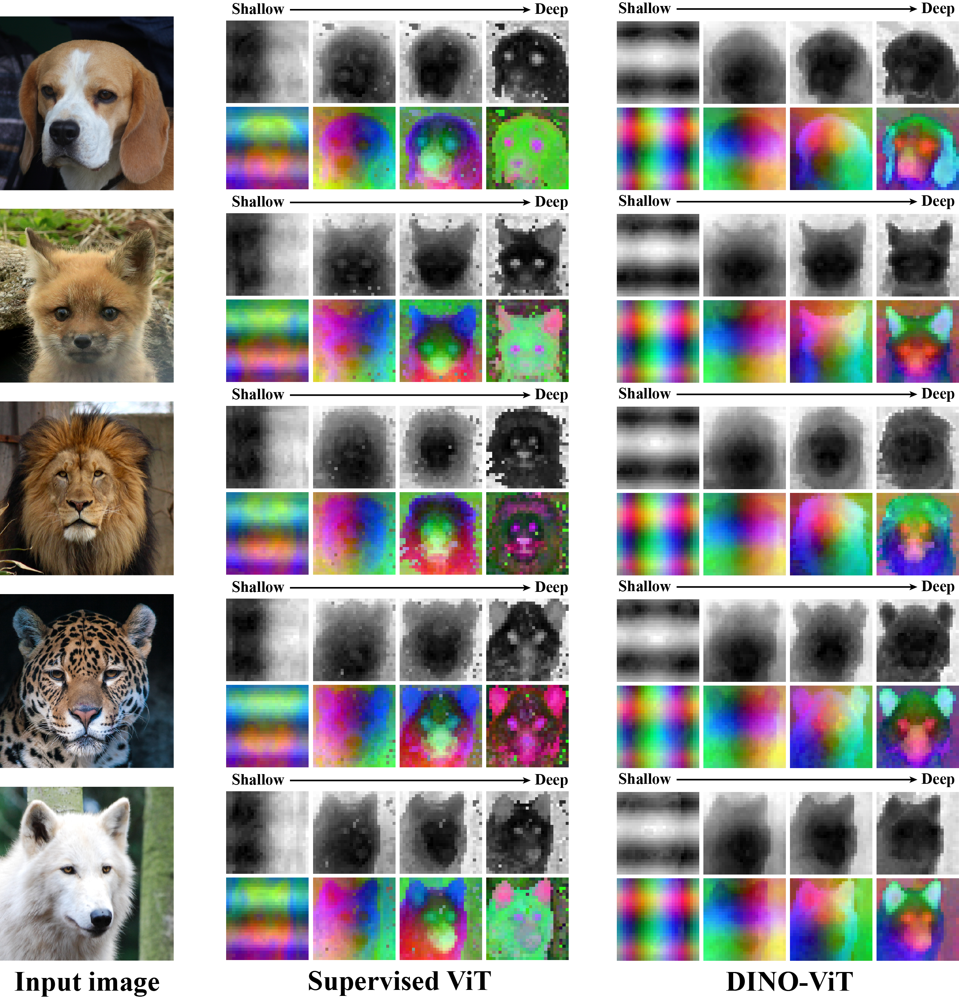

Additional examples from Fig. 3, containing first four PCA components for more images for supervised ViT and DINO-ViT. DINO-ViT produces "cleaner" components. Both ViTs demonstrate positional bias in early layers.
